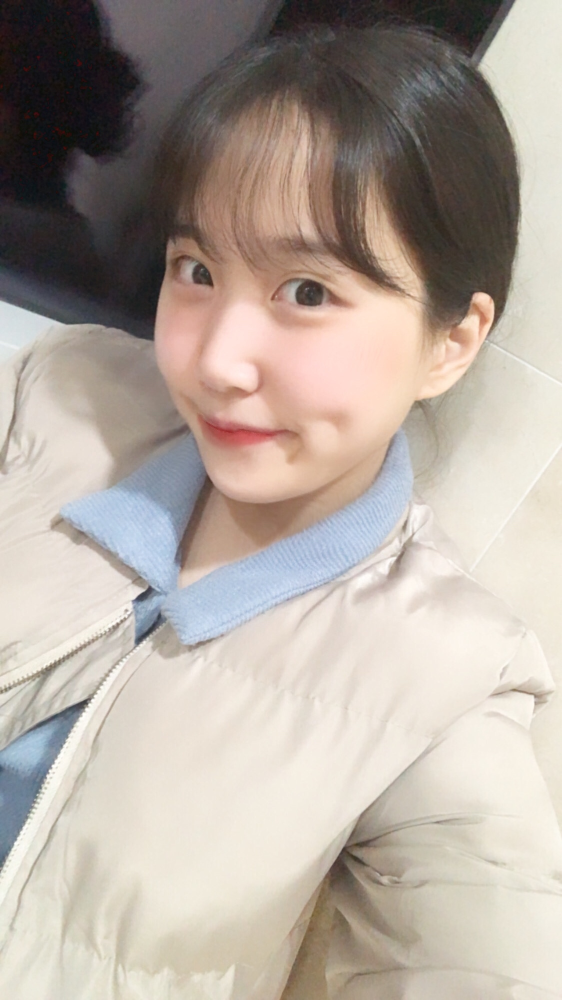

HTML
자기소개
- 인스타
- 블로그
- 유튜브
안녕 뚠뚜밍의 채널에 온 걸 환영해 나는 가끔 냉맨고앵이로도 활동하고 있어
나의 특징
- 내 성격
- 내 외모
- 내 친구들
내 성격
성격(性格)에 대한 엄밀한 정의는 힘들지만, 대체로 한 개인의 내면에서 비교적 더 안정되고 오래 존속하지만, 생애를 통틀어 일정하면서도 변동이 가능하고, 어느 정도는 유전의 영향을 받고 어느 정도는 학습되는 독특한 특성으로 정의된다. 외부 환경과 세계가 휙휙 변해도 그에 대응하는 개인의 내면에서는 크게 변하지 않는 부분들이 존재하는데 그것이 바로 성격.
물론 성격이 꼭 그렇게 안정적이고 일관된 것이냐는 지적도 있다. 인간이란 동물이 의외로 일관성이 없다는 것.[4] 이를 두고 성격심리학자들은 성격의 역설(personality paradox)이라고 부르며 이는 성격심리학의 유서 깊은 떡밥이기도 하다.
